2 Estatística descritiva e visualização de dados no R
Você sabe como resumir, tabular e visualizar dados?
Depois de importar e manipular um banco de dados, o próximo passo é entender o que existe nele. Neste capítulo, vamos aprender a descrever variáveis qualitativas e quantitativas, produzir tabelas prontas e construir gráficos com o ggplot2 para publicações científicas e apresentações.
Ao final deste capítulo, você será capaz de resumir, tabular e visualizar variáveis qualitativas e quantitativas, produzindo tabelas e gráficos prontos para publicação científica.
Caso algum pacote ainda não esteja instalado, execute apenas uma vez:
install.packages(c("tidyverse", "knitr", "gtsummary", "skimr", "scales", "flextable"))2.1 Banco de dados dos exemplos: surto de intoxicação alimentar
Assim como no capítulo anterior, utilizaremos o banco surto, referente a um surto de intoxicação alimentar ocorrido durante um evento científico. A base contém informações demográficas, sintomas, alimentos consumidos e exames laboratoriais dos participantes.
# Lendo a base de dados
surto <- readxl::read_excel("./data/surto.xlsx",
sheet = "Plan1")Antes de resumir os dados, vamos transformar as variáveis codificadas como números em fatores com rótulos compreensíveis:
surto <- surto %>%
mutate(
caso = factor(caso, labels = c("Não", "Sim")),
sexo = factor(sexo, labels = c("Feminino", "Masculino")),
ocupa = factor(ocupa),
diarreia = factor(diarreia, labels = c("Não", "Sim")),
colica = factor(colica, labels = c("Não", "Sim")),
vomito = factor(vomito, labels = c("Não", "Sim")),
nausea = factor(nausea, labels = c("Não", "Sim")),
cefaleia = factor(cefaleia, labels = c("Não", "Sim")),
desidratacao = factor(desidratacao, labels = c("Não", "Sim")),
febre = factor(febre, labels = c("Não", "Sim")),
servsaude = factor(servsaude, labels = c("Não", "Sim")),
gravidade = factor(gravidade,
ordered = TRUE,
labels = c("Leve", "Moderado", "Grave")),
salada = factor(salada, labels = c("Não", "Sim")),
pao = factor(pao, labels = c("Não", "Sim")),
medalhao = factor(medalhao, labels = c("Não", "Sim")),
macarrao = factor(macarrao, labels = c("Não", "Sim")),
molhoqueijo = factor(molhoqueijo, labels = c("Não", "Sim")),
molhoverm = factor(molhoverm, labels = c("Não", "Sim")),
pudim = factor(pudim, labels = c("Não", "Sim")),
frutas = factor(frutas, labels = c("Não", "Sim")),
agua = factor(agua, labels = c("Não", "Sim")),
suco = factor(suco, labels = c("Não", "Sim"))
)Também podemos criar a variável idade a partir da data de nascimento. Para isso, precisamos escolher uma data de referência. Neste exemplo, usaremos 20/11/2018, primeiro dia de início dos sintomas no surto.
2.2 Tipos de variáveis: classificação estatística e correspondência no R
Na estatística descritiva, o primeiro passo é identificar o tipo de variável. Isso define quais tabelas, medidas e gráficos fazem sentido.
| Tipo estatístico | Descrição | Exemplo no banco | Tipo usual no R |
|---|---|---|---|
| Qualitativa nominal | Categorias sem ordem natural |
sexo, caso, agua
|
factor ou character
|
| Qualitativa ordinal | Categorias com ordem natural | gravidade |
ordered factor |
| Quantitativa discreta | Contagem em valores inteiros | número de sintomas |
integer ou numeric
|
| Quantitativa contínua | Medida em escala numérica |
hb, leuco, tgl
|
numeric ou double
|
| Data/hora | Informação temporal |
dtnasc, dtisint
|
Date, POSIXct ou POSIXlt
|
Uma variável qualitativa costuma ser resumida com frequências e percentuais. Uma variável quantitativa costuma ser resumida com média, mediana, desvio padrão, quartis e valores mínimo/máximo dependendo de sua distribuição.
Podemos verificar a classe das variáveis com glimpse():
Rows: 150
Columns: 30
$ id <dbl> 1, 2, 3, 4, 5, 6, 7, 8, 9, 10, 11, 12, 13, 14, 15, 16, 17…
$ caso <fct> Sim, Sim, Sim, Sim, Sim, Sim, Sim, Sim, Sim, Sim, Sim, Si…
$ sexo <fct> Masculino, Feminino, Masculino, Masculino, Masculino, Fem…
$ dtnasc <dttm> 1955-01-15, 1977-03-23, 1980-06-09, 1988-08-11, 1993-12-…
$ ocupa <fct> professor, enfermeiro, professor, professor, estudante, t…
$ dtisint <dttm> 2018-11-20, 2018-11-21, 2018-11-20, 2018-11-20, 2018-11-…
$ horaisint <dbl> 1, 12, 2, 4, 8, 2, 3, 4, 4, 3, 2, 2, 3, 3, 4, 4, 4, 6, 8,…
$ diarreia <fct> Não, Sim, Sim, Sim, Sim, Sim, Sim, Sim, Sim, Sim, Sim, Nã…
$ colica <fct> Sim, Sim, Sim, Sim, Sim, Sim, Sim, Sim, Sim, Sim, Sim, Nã…
$ vomito <fct> Sim, Não, Sim, Não, Não, Sim, Sim, Não, Não, Sim, Sim, Si…
$ nausea <fct> Sim, Sim, Sim, Sim, Não, Sim, Não, Não, Não, Não, Sim, Si…
$ cefaleia <fct> Sim, Não, Sim, Não, Não, Sim, Sim, Não, Sim, Sim, Sim, Nã…
$ desidratacao <fct> Não, Não, Não, Não, Não, Não, Sim, Não, Não, Não, Sim, Si…
$ febre <fct> Não, Não, NA, Não, Não, Sim, Sim, Não, Não, Sim, Não, NA,…
$ servsaude <fct> Não, Não, Não, Não, Não, Não, Sim, Não, Não, Não, Não, Nã…
$ gravidade <ord> Leve, Leve, Moderado, Leve, Leve, Moderado, Grave, Leve, …
$ salada <fct> Não, Não, Sim, Sim, Não, Sim, Não, Sim, Não, Sim, Não, Nã…
$ pao <fct> Não, Sim, Não, Sim, Não, Não, Não, Sim, Sim, Sim, Não, Si…
$ medalhao <fct> Sim, Sim, Não, Não, Não, Sim, Sim, Sim, Sim, Não, Sim, Nã…
$ macarrao <fct> Sim, Não, Não, Sim, Sim, Não, Sim, Sim, Sim, Sim, Sim, Nã…
$ molhoqueijo <fct> Sim, Não, Sim, Sim, Sim, Não, Sim, Sim, Sim, Sim, Sim, Si…
$ molhoverm <fct> Sim, Sim, Não, Não, Sim, Não, Não, Sim, Sim, Sim, Não, Si…
$ pudim <fct> Sim, Sim, Não, Não, Sim, Não, Sim, Não, Sim, Não, Sim, Nã…
$ frutas <fct> Não, Sim, Sim, Não, Sim, Sim, Não, Sim, Não, Sim, Não, Si…
$ agua <fct> Sim, Sim, Não, Não, Sim, Sim, Não, Sim, Não, Sim, Sim, Si…
$ suco <fct> Sim, Sim, Sim, Sim, Sim, Sim, Sim, Sim, Sim, Sim, Sim, Si…
$ hb <dbl> 11.61, 18.79, 10.00, 12.98, 14.62, 12.79, 14.24, 16.14, 1…
$ leuco <dbl> 11535, 13971, 13908, 10491, 13116, 12796, 17563, 14012, 1…
$ tgl <dbl> 194, 188, 97, 91, 101, 100, 102, 105, 89, 99, 101, 104, 1…
$ idade <dbl> 64, 42, 38, 30, 25, 49, 69, 64, 41, 33, 37, 24, 49, 33, 3…Atenção: no R, nem sempre uma variável estará inicialmente no tipo correto. Por exemplo, números podem estar escritos como character.
2.3 Visão geral do banco: summary() e skim()
Antes de fazer tabelas específicas, é útil obter uma visão geral do banco.
A função summary() pertence ao R base e resume cada variável de acordo com sua classe:
summary(surto) id caso sexo dtnasc
Min. : 1.00 Não:100 Feminino :73 Min. :1949-07-25 00:00:00
1st Qu.: 38.25 Sim: 50 Masculino:77 1st Qu.:1979-12-10 12:00:00
Median : 75.50 Median :1983-05-21 00:00:00
Mean : 75.50 Mean :1982-12-26 08:00:00
3rd Qu.:112.75 3rd Qu.:1988-08-18 18:00:00
Max. :150.00 Max. :1999-08-07 00:00:00
ocupa dtisint horaisint diarreia
enfermeiro:49 Min. :2018-11-20 00:00:00 Min. : 1.00 Não : 13
estudante :38 1st Qu.:2018-11-20 00:00:00 1st Qu.: 2.25 Sim : 37
medico :38 Median :2018-11-20 00:00:00 Median : 4.00 NA's:100
professor :10 Mean :2018-11-20 00:57:36 Mean : 4.44
tecnico :15 3rd Qu.:2018-11-20 00:00:00 3rd Qu.: 6.00
Max. :2018-11-21 00:00:00 Max. :12.00
NA's :100 NA's :100
colica vomito nausea cefaleia desidratacao febre servsaude
Não : 19 Não : 23 Não : 21 Não : 30 Não : 43 Não : 33 Não : 47
Sim : 31 Sim : 27 Sim : 29 Sim : 20 Sim : 7 Sim : 6 Sim : 3
NA's:100 NA's:100 NA's:100 NA's:100 NA's:100 NA's:111 NA's:100
gravidade salada pao medalhao macarrao molhoqueijo molhoverm
Leve : 36 Não:67 Não:96 Não: 36 Não:81 Não:74 Não:52
Moderado: 11 Sim:83 Sim:54 Sim:114 Sim:69 Sim:76 Sim:98
Grave : 3
NA's :100
pudim frutas agua suco hb leuco
Não:71 Não:61 Não:55 Não:56 Min. : 9.90 Min. : 698
Sim:79 Sim:89 Sim:95 Sim:94 1st Qu.:12.31 1st Qu.: 6260
Median :13.69 Median : 6754
Mean :13.57 Mean : 8714
3rd Qu.:14.79 3rd Qu.:11281
Max. :18.79 Max. :18557
tgl idade
Min. : 79.0 Min. :19.00
1st Qu.:100.0 1st Qu.:30.00
Median :137.0 Median :35.50
Mean :150.6 Mean :35.91
3rd Qu.:193.2 3rd Qu.:39.00
Max. :395.0 Max. :69.00
Além de resumir o banco, o summary() ajuda a identificar valores que podem estar incorretos. Por exemplo, se uma variável laboratorial apresentar um valor mínimo muito distante do esperado, devemos investigar se é um valor real ou um erro de digitação.
# Identificando a linha com o menor valor de leucócitos
surto %>%
slice(which.min(leuco)) %>%
select(id, caso, sexo, leuco)| id | caso | sexo | leuco |
|---|---|---|---|
| 123 | Não | Masculino | 698 |
No banco usado neste capítulo, o menor valor de leuco pode indicar um erro de digitação. Depois de checar a fonte original, podemos corrigir o valor no banco de trabalho. No exemplo abaixo, usamos a linha identificada anteriormente; por isso o código fica apenas como demonstração e não é executado automaticamente ao renderizar o capítulo:
surto <- surto %>%
mutate(leuco = if_else(row_number() == 123, 6980, leuco))Nunca corrija um valor apenas porque ele parece estranho. Primeiro, confirme no prontuário, ficha de coleta ou fonte original. Se for corrigir, registre claramente o que foi alterado e por quê.
Para uma visão mais organizada, podemos usar skim() do pacote skimr:
O skim() é uma alternativa à função summary() que também nos dá uma visão geral dos nossos dados.
skim(surto)| Name | surto |
| Number of rows | 150 |
| Number of columns | 30 |
| _______________________ | |
| Column type frequency: | |
| factor | 22 |
| numeric | 6 |
| POSIXct | 2 |
| ________________________ | |
| Group variables | None |
Variable type: factor
| skim_variable | n_missing | complete_rate | ordered | n_unique | top_counts |
|---|---|---|---|---|---|
| caso | 0 | 1.00 | FALSE | 2 | Não: 100, Sim: 50 |
| sexo | 0 | 1.00 | FALSE | 2 | Mas: 77, Fem: 73 |
| ocupa | 0 | 1.00 | FALSE | 5 | enf: 49, est: 38, med: 38, tec: 15 |
| diarreia | 100 | 0.33 | FALSE | 2 | Sim: 37, Não: 13 |
| colica | 100 | 0.33 | FALSE | 2 | Sim: 31, Não: 19 |
| vomito | 100 | 0.33 | FALSE | 2 | Sim: 27, Não: 23 |
| nausea | 100 | 0.33 | FALSE | 2 | Sim: 29, Não: 21 |
| cefaleia | 100 | 0.33 | FALSE | 2 | Não: 30, Sim: 20 |
| desidratacao | 100 | 0.33 | FALSE | 2 | Não: 43, Sim: 7 |
| febre | 111 | 0.26 | FALSE | 2 | Não: 33, Sim: 6 |
| servsaude | 100 | 0.33 | FALSE | 2 | Não: 47, Sim: 3 |
| gravidade | 100 | 0.33 | TRUE | 3 | Lev: 36, Mod: 11, Gra: 3 |
| salada | 0 | 1.00 | FALSE | 2 | Sim: 83, Não: 67 |
| pao | 0 | 1.00 | FALSE | 2 | Não: 96, Sim: 54 |
| medalhao | 0 | 1.00 | FALSE | 2 | Sim: 114, Não: 36 |
| macarrao | 0 | 1.00 | FALSE | 2 | Não: 81, Sim: 69 |
| molhoqueijo | 0 | 1.00 | FALSE | 2 | Sim: 76, Não: 74 |
| molhoverm | 0 | 1.00 | FALSE | 2 | Sim: 98, Não: 52 |
| pudim | 0 | 1.00 | FALSE | 2 | Sim: 79, Não: 71 |
| frutas | 0 | 1.00 | FALSE | 2 | Sim: 89, Não: 61 |
| agua | 0 | 1.00 | FALSE | 2 | Sim: 95, Não: 55 |
| suco | 0 | 1.00 | FALSE | 2 | Sim: 94, Não: 56 |
Variable type: numeric
| skim_variable | n_missing | complete_rate | mean | sd | p0 | p25 | p50 | p75 | p100 | hist |
|---|---|---|---|---|---|---|---|---|---|---|
| id | 0 | 1.00 | 75.50 | 43.45 | 1.0 | 38.25 | 75.50 | 112.75 | 150.00 | ▇▇▇▇▇ |
| horaisint | 100 | 0.33 | 4.44 | 2.70 | 1.0 | 2.25 | 4.00 | 6.00 | 12.00 | ▇▅▂▂▁ |
| hb | 0 | 1.00 | 13.57 | 1.74 | 9.9 | 12.31 | 13.69 | 14.79 | 18.79 | ▃▇▇▃▁ |
| leuco | 0 | 1.00 | 8714.40 | 3700.24 | 698.0 | 6260.25 | 6754.50 | 11281.25 | 18557.00 | ▁▇▁▂▁ |
| tgl | 0 | 1.00 | 150.65 | 60.66 | 79.0 | 100.00 | 137.00 | 193.25 | 395.00 | ▇▅▂▁▁ |
| idade | 0 | 1.00 | 35.91 | 8.94 | 19.0 | 30.00 | 35.50 | 39.00 | 69.00 | ▃▇▂▁▁ |
Variable type: POSIXct
| skim_variable | n_missing | complete_rate | min | max | median | n_unique |
|---|---|---|---|---|---|---|
| dtnasc | 0 | 1.00 | 1949-07-25 | 1999-08-07 | 1983-05-21 | 143 |
| dtisint | 100 | 0.33 | 2018-11-20 | 2018-11-21 | 2018-11-20 | 2 |
Essas funções ajudam na inspeção inicial, mas não substituem tabelas finais. Em relatórios e artigos, geralmente usamos tabelas mais controladas, como as produzidas pelo gtsummary.
2.4 Introdução ao ggplot2: a gramática dos gráficos
O ggplot2 é o principal pacote do tidyverse para visualização de dados. Sua lógica é baseada na gramática dos gráficos: um gráfico é construído por camadas.
2.4.1 Camadas: dados, estética (aes) e geometria (geom)
As três partes essenciais de um gráfico no ggplot2 são:
| Elemento | Função | Exemplo |
|---|---|---|
| Dados | banco utilizado no gráfico | surto |
| Estética | mapeamento das variáveis | aes(x = sexo, fill = caso) |
| Geometria | forma visual do gráfico |
geom_bar(), geom_point()
|
2.4.2 A estrutura base de todo gráfico
A estrutura mais simples é:
Nesse exemplo, sexo foi mapeado para o eixo x e geom_bar() contou automaticamente quantas observações existem em cada categoria.
+
No ggplot2, usamos + para acrescentar novas camadas ao gráfico, como geometrias, títulos, escalas e temas.
2.5 Introdução ao gtsummary: tabelas prontas para publicação
O pacote gtsummary produz tabelas de resumo com aparência adequada para relatórios, dissertações, artigos e apresentações.
2.5.1 O que é e por que usar na área da saúde
Em estudos em saúde, é comum apresentar a descrição da amostra em uma Tabela 1. Essa tabela geralmente inclui idade, sexo, sintomas, exames laboratoriais e outras características dos participantes.
O gtsummary facilita esse processo porque identifica automaticamente variáveis categóricas e contínuas, calcula estatísticas adequadas e permite personalizar rótulos, percentuais e casas decimais.
2.5.2 Estrutura básica de tbl_summary()
surto %>%
select(caso, sexo, idade, gravidade, hb, leuco, tgl) %>%
tbl_summary()| Characteristic | N = 1501 |
|---|---|
| caso | |
| Não | 100 (67%) |
| Sim | 50 (33%) |
| sexo | |
| Feminino | 73 (49%) |
| Masculino | 77 (51%) |
| idade | 36 (30, 39) |
| gravidade | |
| Leve | 36 (72%) |
| Moderado | 11 (22%) |
| Grave | 3 (6.0%) |
| Unknown | 100 |
| hb | 13.69 (12.30, 14.80) |
| leuco | 6,755 (6,254, 11,345) |
| tgl | 137 (100, 194) |
| 1 n (%); Median (Q1, Q3) | |
2.5.3 Personalizando rótulos, estatísticas e casas decimais
Podemos controlar os nomes das variáveis, as estatísticas apresentadas e o número de casas decimais:
surto %>%
select(caso, sexo, idade, gravidade, hb, leuco, tgl) %>% # selecionar apenas as colunas das variáveis de interesse
tbl_summary(
label = c( # alterar o cabeçalho de cada variável para um nome mais condizente
caso ~ "Caso de intoxicação alimentar",
sexo ~ "Sexo",
idade ~ "Idade (anos)",
gravidade ~ "Gravidade",
hb ~ "Hemoglobina (g/dL)",
leuco ~ "Leucócitos (/mm³)",
tgl ~ "Triglicerídeos (mg/dL)"
),
statistic = list(
all_continuous() ~ "{mean} ({sd})", # tipo de estatística a ser aplicada nas variáveis numéricas contínuas
all_categorical() ~ "{n} ({p}%)" # tipo de estatística a ser aplicada nas variáveis categóricas
),
digits = all_continuous() ~ 1, # número de casas decimais para as estatísticas contínuas
missing_text = "Sem informação"
)| Characteristic | N = 1501 |
|---|---|
| Caso de intoxicação alimentar | |
| Não | 100 (67%) |
| Sim | 50 (33%) |
| Sexo | |
| Feminino | 73 (49%) |
| Masculino | 77 (51%) |
| Idade (anos) | 35.9 (8.9) |
| Gravidade | |
| Leve | 36 (72%) |
| Moderado | 11 (22%) |
| Grave | 3 (6.0%) |
| Sem informação | 100 |
| Hemoglobina (g/dL) | 13.6 (1.7) |
| Leucócitos (/mm³) | 8,714.4 (3,700.2) |
| Triglicerídeos (mg/dL) | 150.6 (60.7) |
| 1 n (%); Mean (SD) | |
A estatística {mean} ({sd}) apresenta média e desvio padrão. Para variáveis assimétricas, pode ser melhor usar {median} ({p25}, {p75}), que mostra mediana e intervalo interquartil.
2.6 Variável qualitativa: como meus dados estão distribuídos?
Variáveis qualitativas representam categorias. Para descrevê-las, usamos frequências absolutas e relativas.
2.6.1 Frequência absoluta e relativa: count() + mutate()
Vamos responder: quantos participantes eram do sexo feminino e masculino?
surto %>%
count(sexo, name = "freq_absoluta") %>%
mutate(percentual = freq_absoluta / sum(freq_absoluta) * 100) %>%
kable(digits = 1,
col.names = c("Sexo", "Frequência absoluta", "Percentual"))| Sexo | Frequência absoluta | Percentual |
|---|---|---|
| Feminino | 73 | 48.7 |
| Masculino | 77 | 51.3 |
A função count() é uma forma abreviada de fazer group_by() seguido de summarise(n = n()).
2.6.2 tbl_summary(): frequências, percentuais e dados faltantes
surto %>%
select(sexo, caso, gravidade, servsaude) %>%
tbl_summary(
label = c(
sexo ~ "Sexo",
caso ~ "Caso",
gravidade ~ "Gravidade",
servsaude ~ "Buscou serviço de saúde"
),
statistic = all_categorical() ~ "{n} ({p}%)",
missing_text = "Sem informação"
)| Characteristic | N = 1501 |
|---|---|
| Sexo | |
| Feminino | 73 (49%) |
| Masculino | 77 (51%) |
| Caso | |
| Não | 100 (67%) |
| Sim | 50 (33%) |
| Gravidade | |
| Leve | 36 (72%) |
| Moderado | 11 (22%) |
| Grave | 3 (6.0%) |
| Sem informação | 100 |
| Buscou serviço de saúde | |
| Não | 47 (94%) |
| Sim | 3 (6.0%) |
| Sem informação | 100 |
| 1 n (%) | |
2.6.3 Gráfico de barras: geom_bar()
surto %>%
ggplot(aes(x = sexo, fill = sexo)) +
geom_bar() +
labs(
title = "Distribuição dos participantes segundo sexo",
x = "Sexo",
y = "Número de participantes",
fill = "Sexo"
) +
theme_classic()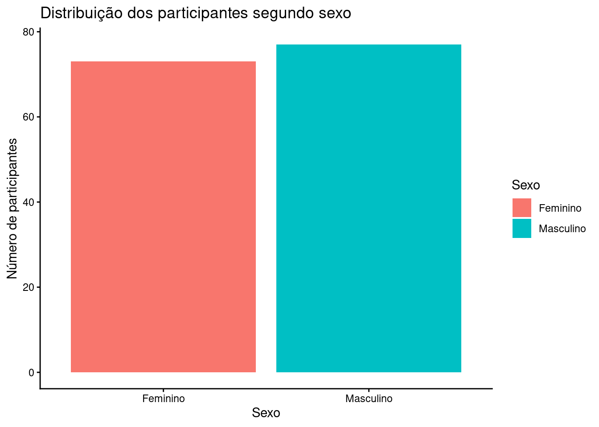
Para apresentar percentuais no eixo y:
surto %>%
ggplot(aes(x = sexo, fill = sexo)) +
geom_bar(aes(y = after_stat(count / sum(count)))) +
scale_y_continuous(labels = percent_format()) +
labs(
title = "Distribuição percentual dos participantes segundo sexo",
x = "Sexo",
y = "Percentual",
fill = "Sexo"
) +
theme_classic()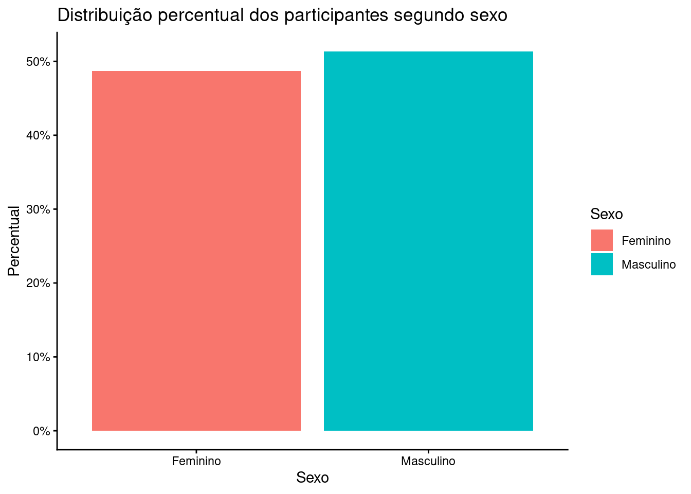
2.7 Variável quantitativa: onde está o centro e quanta variação existe?
Variáveis quantitativas são medidas numéricas. No banco surto, exemplos são hb, leuco e tgl.
2.7.1 Média, mediana e moda: quando usar cada uma?
| Medida | O que representa | Quando usar |
|---|---|---|
| Média | Soma dos valores dividida pelo número de observações | Distribuições aproximadamente simétricas |
| Mediana | Valor central após ordenar os dados | Distribuições assimétricas ou com outliers |
| Moda | Valor mais frequente | Útil quando há repetição de valores |
A moda não tem uma função base tão direta quanto média e mediana. Podemos criar uma função simples:
2.7.2 Desvio padrão, amplitude interquartil e CV: summarise()
O desvio padrão mede a dispersão em torno da média. A amplitude interquartil é a diferença entre o terceiro e o primeiro quartil. O coeficiente de variação expressa o desvio padrão em relação à média.
surto %>%
summarise(
n = sum(!is.na(idade)),
media = mean(idade, na.rm = TRUE),
dp = sd(idade, na.rm = TRUE),
mediana = median(idade, na.rm = TRUE),
q1 = quantile(idade, 0.25, na.rm = TRUE),
q3 = quantile(idade, 0.75, na.rm = TRUE),
iqr = IQR(idade, na.rm = TRUE),
minimo = min(idade, na.rm = TRUE),
maximo = max(idade, na.rm = TRUE),
cv = sd(idade, na.rm = TRUE) / mean(idade, na.rm = TRUE) * 100
) %>%
kable(digits = 1)| n | media | dp | mediana | q1 | q3 | iqr | minimo | maximo | cv |
|---|---|---|---|---|---|---|---|---|---|
| 150 | 35.9 | 8.9 | 35.5 | 30 | 39 | 9 | 19 | 69 | 24.9 |
Também podemos calcular essas medidas por grupo. Por exemplo, média e desvio padrão da idade entre casos e não casos:
surto %>%
group_by(caso) %>%
summarise(
media = mean(idade, na.rm = TRUE),
dp = sd(idade, na.rm = TRUE),
mediana = median(idade, na.rm = TRUE),
minimo = min(idade, na.rm = TRUE),
maximo = max(idade, na.rm = TRUE)
) %>%
kable(digits = 1,
col.names = c("Caso", "Média", "DP", "Mediana", "Mínimo", "Máximo"))| Caso | Média | DP | Mediana | Mínimo | Máximo |
|---|---|---|---|---|---|
| Não | 34.4 | 6.9 | 35 | 21 | 56 |
| Sim | 39.0 | 11.5 | 37 | 19 | 69 |
2.7.3 tbl_summary(): medidas de tendência central e dispersão
surto %>%
select(idade, hb, leuco, tgl) %>%
tbl_summary(
label = c(
idade ~ "Idade (anos)",
hb ~ "Hemoglobina (g/dL)",
leuco ~ "Leucócitos (/mm³)",
tgl ~ "Triglicerídeos (mg/dL)"
),
statistic = all_continuous() ~ "{median} ({p25}, {p75})",
digits = all_continuous() ~ 1,
missing_text = "Sem informação"
)| Characteristic | N = 1501 |
|---|---|
| Idade (anos) | 35.5 (30.0, 39.0) |
| Hemoglobina (g/dL) | 13.7 (12.3, 14.8) |
| Leucócitos (/mm³) | 6,754.5 (6,254.0, 11,345.0) |
| Triglicerídeos (mg/dL) | 137.0 (100.0, 194.0) |
| 1 Median (Q1, Q3) | |
2.7.4 Histograma: geom_histogram()
O histograma mostra a distribuição de uma variável quantitativa.
surto %>%
ggplot(aes(x = leuco)) +
geom_histogram(bins = 20, fill = "#0072B2", color = "white") +
labs(
title = "Distribuição da contagem de leucócitos",
x = "Leucócitos (/mm³)",
y = "Número de participantes"
) +
theme_classic()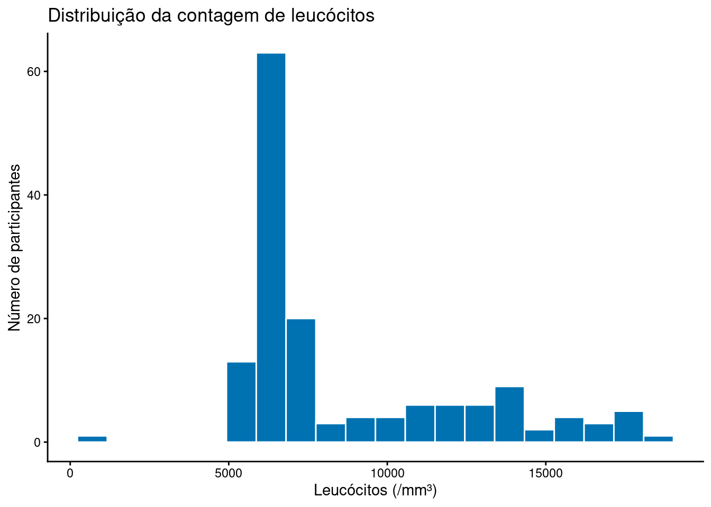
2.7.5 Boxplot: geom_boxplot() - lendo o diagrama
O boxplot resume a distribuição usando mediana, quartis e possíveis valores extremos.
surto %>%
ggplot(aes(y = leuco)) +
geom_boxplot(fill = "#56B4E9") +
labs(
title = "Boxplot da contagem de leucócitos",
y = "Leucócitos (/mm³)"
) +
theme_classic()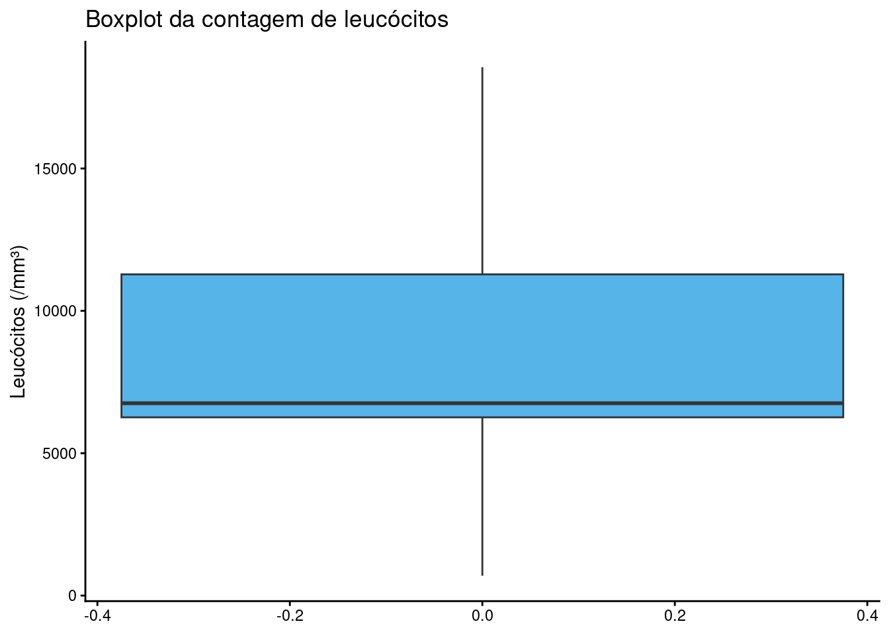
A linha dentro da caixa representa a mediana. A parte inferior e superior da caixa representam o primeiro e o terceiro quartil. Pontos fora dos limites podem indicar valores extremos (outliers).
O boxplot também ajuda a visualizar posição (mediana e quartis), dispersão (tamanho da caixa), assimetria (posição da mediana dentro da caixa) e possíveis outliers.
2.8 Qualitativa × qualitativa: existe associação?
Quando temos duas variáveis qualitativas, geralmente queremos comparar percentuais entre grupos.
2.8.1 tbl_summary(by = ): tabela cruzada com percentuais
Vamos observar se o consumo de água e pão foi diferente entre casos e não casos:
surto %>%
select(caso, agua, pao) %>%
tbl_summary(
by = caso,
missing = "no",
label = c(
agua ~ "Consumiu água",
pao ~ "Consumiu pão"
),
statistic = all_categorical() ~ "{n} ({p}%)"
) %>%
modify_header(label ~ "**Alimento**")| Alimento |
Não N = 1001 |
Sim N = 501 |
|---|---|---|
| Consumiu água | ||
| Não | 40 (40%) | 15 (30%) |
| Sim | 60 (60%) | 35 (70%) |
| Consumiu pão | ||
| Não | 66 (66%) | 30 (60%) |
| Sim | 34 (34%) | 20 (40%) |
| 1 n (%) | ||
2.8.2 modify_spanning_header(): cabeçalhos e formatação final
Também é possível alterar o subcabeçalho da tabela agrupando as colunas de caso na tabela.
tbl_alimentos <- surto %>%
select(caso, agua, pao) %>%
tbl_summary(
by = caso,
missing = "no",
label = c(
agua ~ "Consumiu água",
pao ~ "Consumiu pão"
)
) %>%
modify_header(label ~ "**Alimento**") %>%
modify_spanning_header(c("stat_1", "stat_2") ~ "**Caso de intoxicação alimentar**")
tbl_alimentos| Alimento |
Caso de intoxicação alimentar
|
|
|---|---|---|
|
Não N = 1001 |
Sim N = 501 |
|
| Consumiu água | ||
| Não | 40 (40%) | 15 (30%) |
| Sim | 60 (60%) | 35 (70%) |
| Consumiu pão | ||
| Não | 66 (66%) | 30 (60%) |
| Sim | 34 (34%) | 20 (40%) |
| 1 n (%) | ||
Se precisar saber os nomes internos das colunas de uma tabela gtsummary, use:
show_header_names(tbl_alimentos)2.8.3 Gráfico de barras agrupado e empilhado
Barras agrupadas facilitam comparar frequências absolutas:
surto %>%
ggplot(aes(x = agua, fill = caso)) +
geom_bar(position = "dodge") +
labs(
title = "Distribuição de casos segundo consumo de água",
x = "Consumiu água",
y = "Número de participantes",
fill = "Caso"
) +
theme_classic()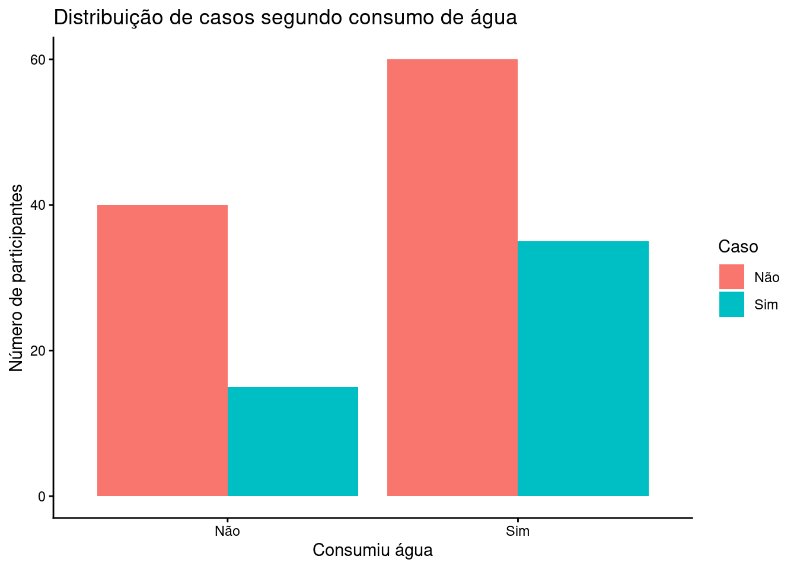
Barras empilhadas proporcionais facilitam comparar percentuais:
surto %>%
ggplot(aes(x = agua, fill = caso)) +
geom_bar(position = "fill") +
scale_y_continuous(labels = percent_format()) +
labs(
title = "Percentual de casos segundo consumo de água",
x = "Consumiu água",
y = "Percentual",
fill = "Caso"
) +
theme_classic()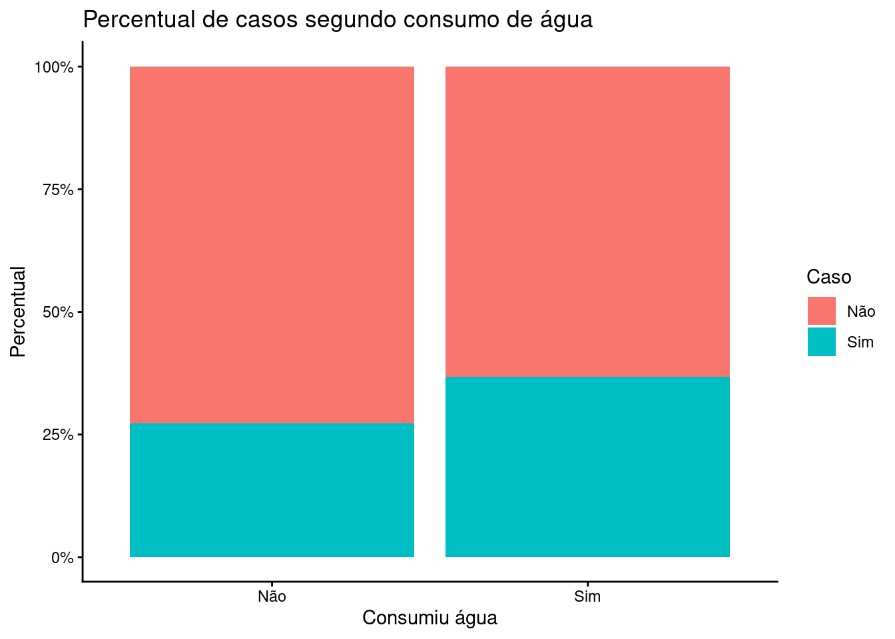
2.9 Qualitativa × quantitativa: os grupos diferem?
Quando cruzamos uma variável qualitativa com uma quantitativa, perguntamos se a distribuição da medida numérica muda entre os grupos.
2.9.1 tbl_summary(by = ): medidas por grupo
surto %>%
select(caso, idade, hb, leuco, tgl) %>%
tbl_summary(
by = caso,
label = c(
idade ~ "Idade (anos)",
hb ~ "Hemoglobina (g/dL)",
leuco ~ "Leucócitos (/mm³)",
tgl ~ "Triglicerídeos (mg/dL)"
),
statistic = all_continuous() ~ "{median} ({p25}, {p75})",
digits = all_continuous() ~ 1,
missing_text = "Sem informação"
) %>%
modify_spanning_header(c("stat_1", "stat_2") ~ "**Caso de intoxicação alimentar**")| Characteristic |
Caso de intoxicação alimentar
|
|
|---|---|---|
|
Não N = 1001 |
Sim N = 501 |
|
| Idade (anos) | 35.0 (29.5, 38.0) | 37.0 (30.0, 42.0) |
| Hemoglobina (g/dL) | 13.7 (12.2, 15.1) | 13.5 (12.6, 14.5) |
| Leucócitos (/mm³) | 6,432.0 (6,075.0, 6,754.5) | 13,063.5 (11,345.0, 15,808.0) |
| Triglicerídeos (mg/dL) | 168.5 (116.0, 202.0) | 100.0 (92.0, 108.0) |
| 1 Median (Q1, Q3) | ||
2.9.2 Boxplot por grupo: geom_boxplot()
surto %>%
ggplot(aes(x = caso, y = leuco, fill = caso)) +
geom_boxplot() +
labs(
title = "Leucócitos segundo classificação de caso",
x = "Caso de intoxicação alimentar",
y = "Leucócitos (/mm³)",
fill = "Caso"
) +
theme_classic()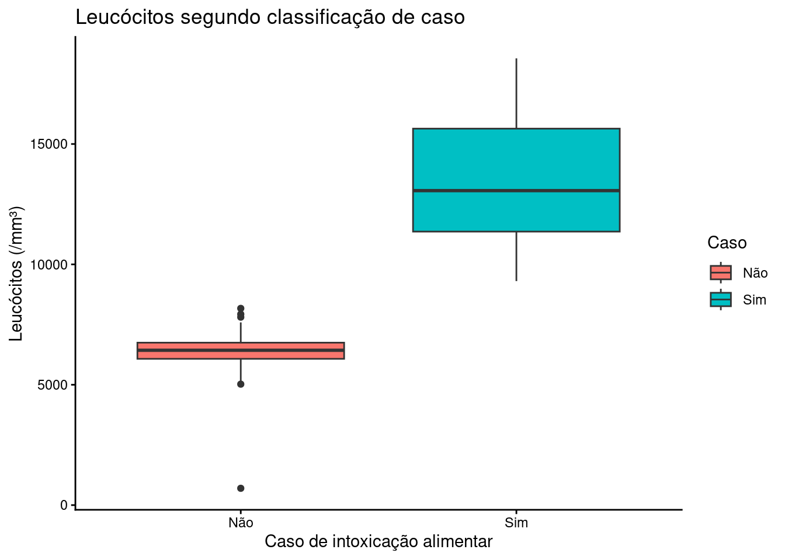
2.9.3 Histograma sobreposto por grupo
surto %>%
ggplot(aes(x = leuco, fill = caso)) +
geom_histogram(alpha = 0.6, position = "identity", bins = 20) +
labs(
title = "Distribuição de leucócitos segundo caso",
x = "Leucócitos (/mm³)",
y = "Número de participantes",
fill = "Caso"
) +
theme_classic()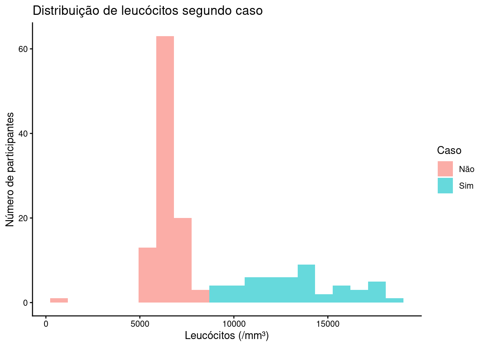
alpha)
Quando dois histogramas ficam sobrepostos, alpha controla a transparência das cores. Valores menores deixam as barras mais transparentes.
2.10 Quantitativa × quantitativa: existe relação?
Quando as duas variáveis são quantitativas, podemos investigar se valores maiores de uma variável tendem a acompanhar valores maiores ou menores de outra.
2.10.1 Gráfico de dispersão: geom_point()
surto %>%
ggplot(aes(x = hb, y = leuco)) +
geom_point(color = "#0072B2", alpha = 0.8) +
labs(
title = "Relação entre hemoglobina e leucócitos",
x = "Hemoglobina (g/dL)",
y = "Leucócitos (/mm³)"
) +
theme_classic()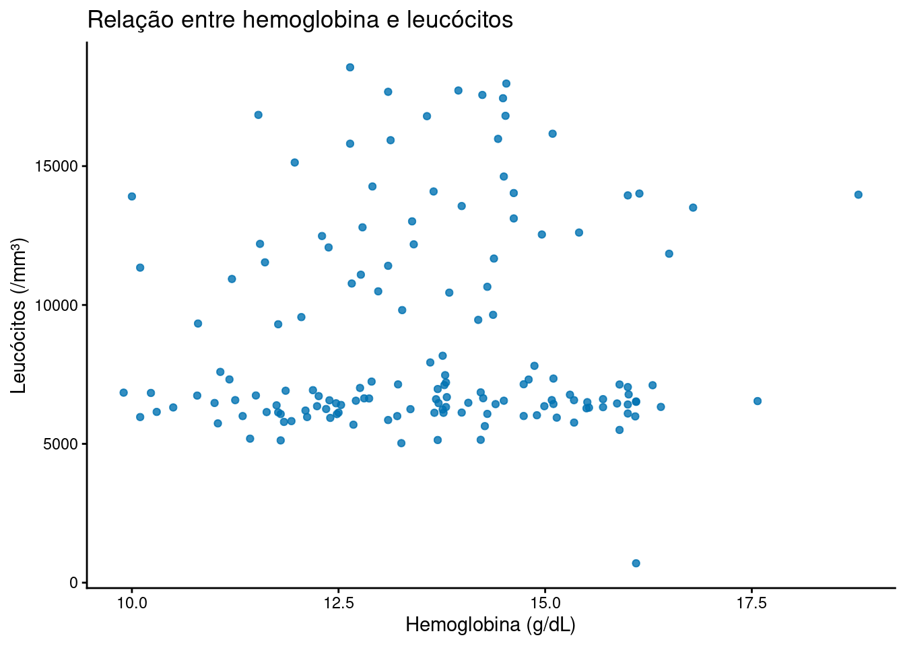
2.10.2 Linha de tendência: geom_smooth()
surto %>%
ggplot(aes(x = hb, y = leuco)) +
geom_point(color = "#0072B2", alpha = 0.8) +
geom_smooth(method = "lm", se = TRUE, color = "black") +
labs(
title = "Relação entre hemoglobina e leucócitos com linha de tendência",
x = "Hemoglobina (g/dL)",
y = "Leucócitos (/mm³)"
) +
theme_classic()`geom_smooth()` using formula = 'y ~ x'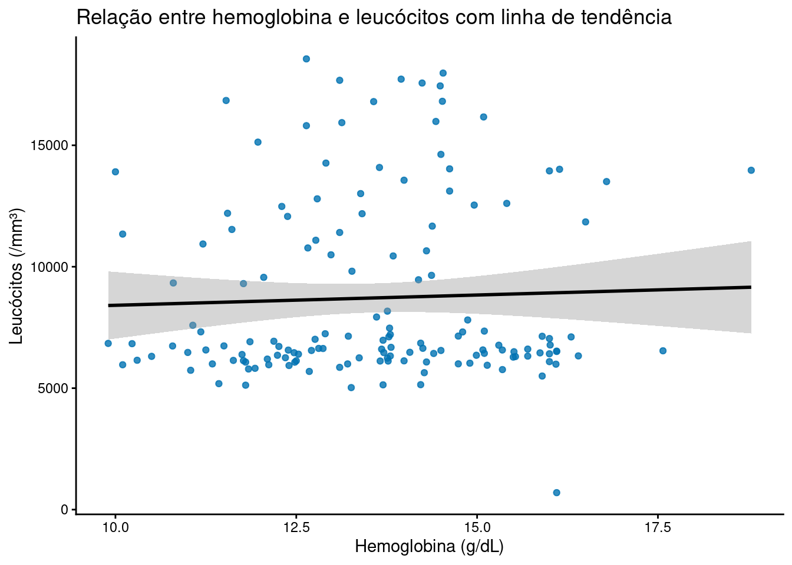
Um gráfico de dispersão pode sugerir associação, mas não prova causalidade. Para testar hipóteses, usamos métodos inferenciais, que serão discutidos nos próximos capítulos.
2.11 Adicionando mais de duas variáveis nos gráficos
Muitas perguntas em saúde envolvem mais de duas variáveis. O ggplot2 permite adicionar uma terceira ou até mais variáveis usando cor, forma, tamanho ou painéis.
2.11.1 Cor, forma e tamanho como dimensão extra (aes)
surto %>%
ggplot(aes(x = hb, y = leuco, color = caso, shape = sexo)) +
geom_point(size = 2.5, alpha = 0.8) +
labs(
title = "Hemoglobina e leucócitos segundo caso e sexo",
x = "Hemoglobina (g/dL)",
y = "Leucócitos (/mm³)",
color = "Caso",
shape = "Sexo"
) +
theme_classic()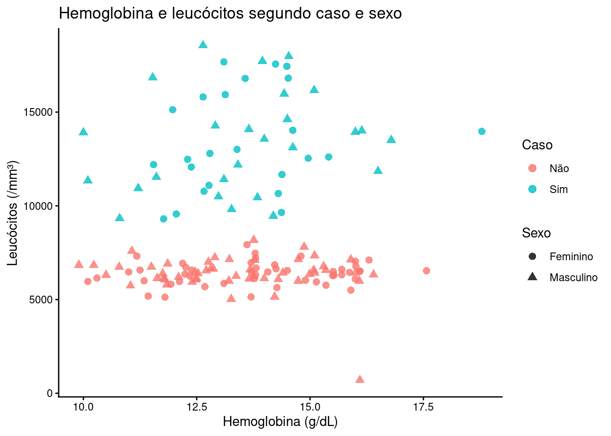
2.11.2 Painéis por grupo: facet_wrap()
surto %>%
ggplot(aes(x = leuco, fill = caso)) +
geom_histogram(bins = 20, color = "white") +
labs(
title = "Distribuição de leucócitos por sexo",
x = "Leucócitos (/mm³)",
y = "Número de participantes",
fill = "Caso"
) +
theme_classic() +
facet_wrap(~ sexo)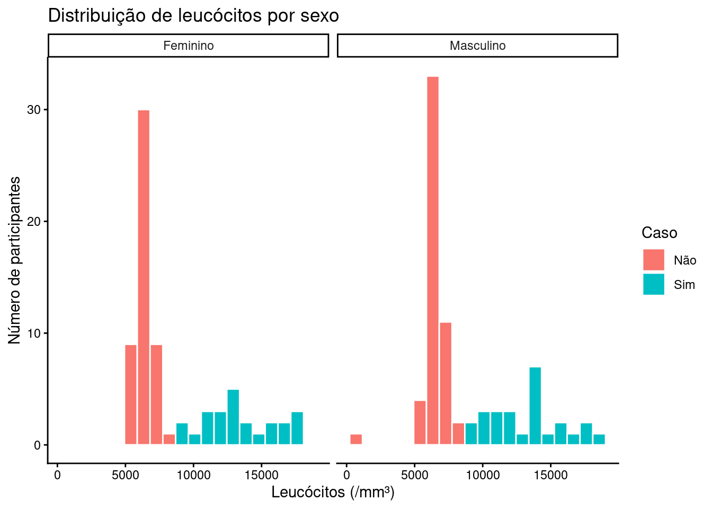
2.11.3 tbl_summary() estratificado: add_overall() e tbl_strata()
O add_overall() adiciona uma coluna com o resumo geral, além das colunas por grupo:
surto %>%
select(caso, sexo, idade, hb, leuco, tgl) %>%
tbl_summary(
by = caso,
label = c(
sexo ~ "Sexo",
idade ~ "Idade (anos)",
hb ~ "Hemoglobina (g/dL)",
leuco ~ "Leucócitos (/mm³)",
tgl ~ "Triglicerídeos (mg/dL)"
),
statistic = list(
all_continuous() ~ "{median} ({p25}, {p75})",
all_categorical() ~ "{n} ({p}%)"
),
digits = all_continuous() ~ 1
) %>%
add_overall(last = FALSE)| Characteristic |
Overall N = 1501 |
Não N = 1001 |
Sim N = 501 |
|---|---|---|---|
| Sexo | |||
| Feminino | 73 (49%) | 49 (49%) | 24 (48%) |
| Masculino | 77 (51%) | 51 (51%) | 26 (52%) |
| Idade (anos) | 35.5 (30.0, 39.0) | 35.0 (29.5, 38.0) | 37.0 (30.0, 42.0) |
| Hemoglobina (g/dL) | 13.7 (12.3, 14.8) | 13.7 (12.2, 15.1) | 13.5 (12.6, 14.5) |
| Leucócitos (/mm³) | 6,754.5 (6,254.0, 11,345.0) | 6,432.0 (6,075.0, 6,754.5) | 13,063.5 (11,345.0, 15,808.0) |
| Triglicerídeos (mg/dL) | 137.0 (100.0, 194.0) | 168.5 (116.0, 202.0) | 100.0 (92.0, 108.0) |
| 1 n (%); Median (Q1, Q3) | |||
O tbl_strata() permite criar tabelas separadas por estratos. No exemplo abaixo, a tabela é estratificada por sexo:
surto %>%
select(sexo, caso, hb, leuco) %>%
tbl_strata(
strata = sexo,
.tbl_fun = ~ .x %>%
tbl_summary(
by = caso,
statistic = all_continuous() ~ "{median} ({p25}, {p75})",
digits = all_continuous() ~ 1
)
)| Characteristic |
Feminino
|
Masculino
|
||
|---|---|---|---|---|
|
Não N = 491 |
Sim N = 241 |
Não N = 511 |
Sim N = 261 |
|
| hb | 13.8 (12.3, 15.5) | 13.3 (12.5, 14.4) | 13.2 (11.9, 14.7) | 13.7 (12.6, 14.5) |
| leuco | 6,465.0 (5,999.0, 6,681.0) | 12,702.0 (11,380.5, 15,870.5) | 6,416.0 (6,118.0, 6,832.0) | 13,534.0 (11,345.0, 14,625.0) |
| 1 Median (Q1, Q3) | ||||
2.12 Gráficos prontos para publicação
Um gráfico pronto para publicação deve ter título claro, eixos nomeados, legenda compreensível, cores acessíveis e resolução adequada.
2.12.1 Temas: theme_classic() e ajustes manuais com theme()
grafico_leuco <- surto %>%
ggplot(aes(x = caso, y = leuco, fill = caso)) +
geom_boxplot(width = 0.6, outlier.alpha = 0.6) +
labs(
title = "Contagem de leucócitos segundo classificação de caso",
x = "Caso de intoxicação alimentar",
y = "Leucócitos (/mm³)",
fill = "Caso"
) +
theme_classic() +
theme(
legend.position = "none",
plot.title = element_text(face = "bold", hjust = 0.5),
axis.title = element_text(face = "bold")
)
grafico_leuco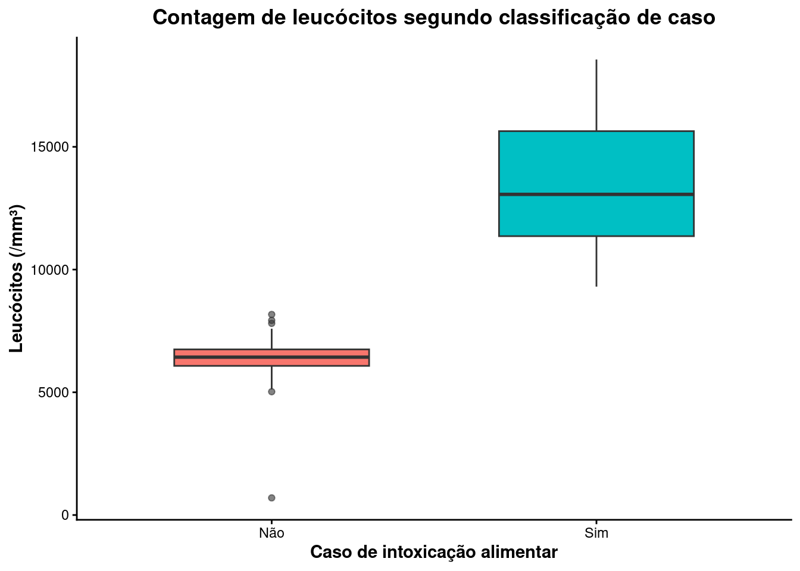
2.12.2 Paletas de cores acessíveis
Uma paleta acessível deve funcionar para leitores com diferentes tipos de percepção de cor. Uma opção simples é usar cores da paleta Okabe-Ito:
cores_okabe_ito <- c("Não" = "#E69F00", "Sim" = "#56B4E9")
surto %>%
ggplot(aes(x = agua, fill = caso)) +
geom_bar(position = "fill") +
scale_fill_manual(values = cores_okabe_ito) +
scale_y_continuous(labels = percent_format()) +
labs(
title = "Percentual de casos segundo consumo de água",
x = "Consumiu água",
y = "Percentual",
fill = "Caso"
) +
theme_classic()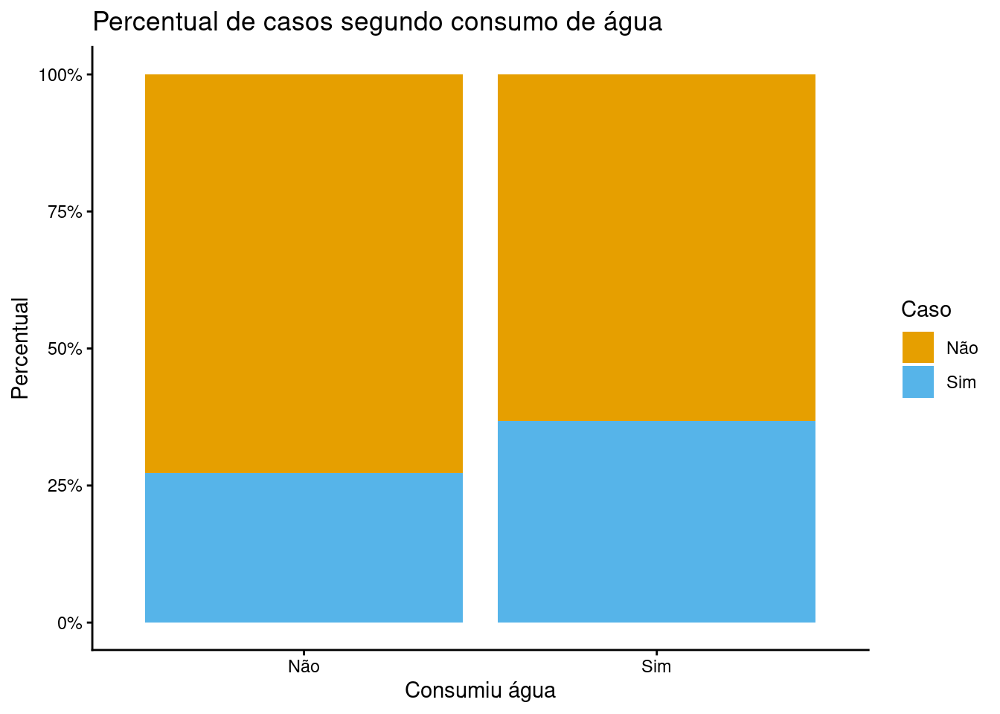
2.12.3 Títulos, eixos, legendas e anotações
surto %>%
ggplot(aes(x = hb, y = leuco, color = caso)) +
geom_point(size = 2.5, alpha = 0.8) +
geom_smooth(method = "lm", se = FALSE) +
scale_color_manual(values = cores_okabe_ito) +
labs(
title = "Relação entre hemoglobina e leucócitos",
subtitle = "Participantes do evento científico investigado",
x = "Hemoglobina (g/dL)",
y = "Leucócitos (/mm³)",
color = "Caso",
caption = "Fonte: banco surto"
) +
annotate("text",
x = Inf, y = Inf,
label = "Linha: tendência linear",
hjust = 1.05, vjust = 1.5,
size = 3.5) +
theme_classic()`geom_smooth()` using formula = 'y ~ x'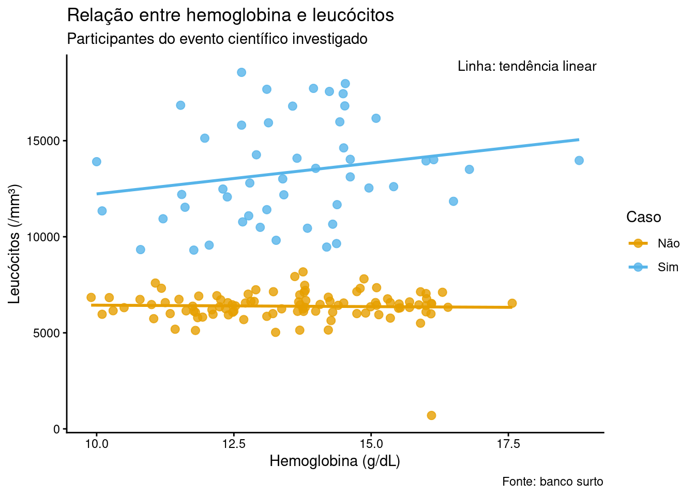
2.12.4 Exportando com ggsave(): formatos e resolução para periódicos
Depois de criar um gráfico e salvá-lo em um objeto, podemos exportar com ggsave():
ggsave(
filename = "figura_leucocitos_caso.png",
plot = grafico_leuco,
width = 16,
height = 10,
units = "cm",
dpi = 300
)Formatos comuns:
| Formato | Quando usar |
|---|---|
.png |
Relatórios, slides e documentos Word |
.tiff |
Submissão para alguns periódicos |
.pdf |
Gráficos vetoriais e documentos em PDF |
.svg |
Edição posterior em softwares vetoriais |
Para publicação científica, uma resolução de 300 dpi costuma ser o mínimo recomendado para imagens raster, como .png e .tiff.
2.13 Tabelas prontas para publicação
Além de construir tabelas, muitas vezes precisamos exportá-las para Word ou PDF.
2.13.1 Exportando para Word com as_flex_table()
O gtsummary pode ser convertido em uma tabela do pacote flextable, que funciona bem em documentos Word.
tabela_publicacao <- surto %>%
select(caso, sexo, idade, gravidade, hb, leuco, tgl) %>%
tbl_summary(
by = caso,
label = c(
sexo ~ "Sexo",
idade ~ "Idade (anos)",
gravidade ~ "Gravidade",
hb ~ "Hemoglobina (g/dL)",
leuco ~ "Leucócitos (/mm³)",
tgl ~ "Triglicerídeos (mg/dL)"
),
statistic = list(
all_continuous() ~ "{median} ({p25}, {p75})",
all_categorical() ~ "{n} ({p}%)"
),
digits = all_continuous() ~ 1,
missing_text = "Sem informação"
) %>%
add_overall(last = FALSE) %>%
modify_header(label ~ "**Característica**") %>%
modify_spanning_header(c("stat_1", "stat_2") ~ "**Caso de intoxicação alimentar**")
tabela_publicacao| Característica |
Overall N = 1501 |
Caso de intoxicação alimentar
|
|
|---|---|---|---|
|
Não N = 1001 |
Sim N = 501 |
||
| Sexo | |||
| Feminino | 73 (49%) | 49 (49%) | 24 (48%) |
| Masculino | 77 (51%) | 51 (51%) | 26 (52%) |
| Idade (anos) | 35.5 (30.0, 39.0) | 35.0 (29.5, 38.0) | 37.0 (30.0, 42.0) |
| Gravidade | |||
| Leve | 36 (72%) | 0 (NA%) | 36 (72%) |
| Moderado | 11 (22%) | 0 (NA%) | 11 (22%) |
| Grave | 3 (6.0%) | 0 (NA%) | 3 (6.0%) |
| Sem informação | 100 | 100 | 0 |
| Hemoglobina (g/dL) | 13.7 (12.3, 14.8) | 13.7 (12.2, 15.1) | 13.5 (12.6, 14.5) |
| Leucócitos (/mm³) | 6,754.5 (6,254.0, 11,345.0) | 6,432.0 (6,075.0, 6,754.5) | 13,063.5 (11,345.0, 15,808.0) |
| Triglicerídeos (mg/dL) | 137.0 (100.0, 194.0) | 168.5 (116.0, 202.0) | 100.0 (92.0, 108.0) |
| 1 n (%); Median (Q1, Q3) | |||
tabela_publicacao %>%
as_flex_table() %>%
flextable::save_as_docx(path = "tabela_publicacao.docx")2.13.2 Exportando para PDF via R Markdown
Para exportar uma tabela para PDF, uma forma prática é renderizar o próprio documento Quarto ou R Markdown em formato PDF. No cabeçalho YAML do arquivo, podemos usar:
---
title: "Estatística descritiva e visualização de dados no R"
format:
pdf:
toc: true
number-sections: true
---Para edição, o Word costuma ser mais prático. Para submissão, impressão ou compartilhamento de versão final, o PDF preserva melhor a formatação.
2.14 Resumo do capítulo
Neste capítulo, aprendemos a resumir, tabular e visualizar variáveis qualitativas e quantitativas no R. A tabela abaixo resume as principais funções apresentadas:
| Seção | Função | Pacote | O que faz |
|---|---|---|---|
| 4.1 | glimpse() |
dplyr |
Mostra estrutura e tipos das variáveis |
| 4.2 | summary() |
Base R | Produz resumo geral do banco |
| 4.2 | which.min() |
Base R | Identifica a posição do menor valor |
| 4.2 | skim() |
skimr |
Produz inspeção detalhada das variáveis |
| 4.3 | ggplot() |
ggplot2 |
Inicia um gráfico |
| 4.3 | aes() |
ggplot2 |
Mapeia variáveis para estética do gráfico |
| 4.4 | tbl_summary() |
gtsummary |
Cria tabelas de resumo |
| 4.5 | count() |
dplyr |
Conta categorias de uma variável |
| 4.5 | mutate() |
dplyr |
Cria percentuais e novas variáveis |
| 4.6 | summarise() |
dplyr |
Calcula medidas numéricas de resumo |
| 4.6 | geom_histogram() |
ggplot2 |
Constrói histogramas |
| 4.6 | geom_boxplot() |
ggplot2 |
Constrói boxplots |
| 4.7 | modify_spanning_header() |
gtsummary |
Personaliza cabeçalhos agrupados |
| 4.9 | geom_point() |
ggplot2 |
Constrói gráficos de dispersão |
| 4.9 | geom_smooth() |
ggplot2 |
Adiciona linha de tendência |
| 4.10 | facet_wrap() |
ggplot2 |
Cria painéis por grupo |
| 4.10 | add_overall() |
gtsummary |
Adiciona coluna total à tabela |
| 4.10 | tbl_strata() |
gtsummary |
Cria tabelas estratificadas |
| 4.11 | theme_classic() |
ggplot2 |
Aplica tema limpo ao gráfico |
| 4.11 | ggsave() |
ggplot2 |
Exporta gráficos |
| 4.12 | as_flex_table() |
gtsummary |
Converte tabela para Word |
A estatística descritiva ajuda a conhecer os dados. Nos próximos capítulos, essas tabelas e gráficos servirão de base para testes estatísticos, modelos e interpretação de associações.